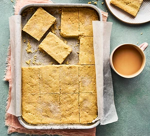

Go Back to Index Page

Author: Ailsa Burt
Prep: 10 min
Cook: 30 min
Difficulty: Easy
Makes: 16 squares
Description:
Make some simple Scottish shortbread squares for the biscuit tin using just four ingredients. They're perfect enjoyed with a mid-morning cuppa.
Ingredients:
- 250g unsalted butter, softened, plus extra for the tin
- 350g plain flour
- 50g rice flour
- 100g caster sugar, plus 1 tbsp
Steps:
- Heat the oven to 180C/160C fan/gas 4. Butter and line a 28 x 18cm tin. In a food processor, pulse together the butter, both flours, ½ tsp salt and the 100g of sugar until the mixture resembles fine breadcrumbs. Pulse a few more times until it comes together into a rough ball. Alternatively, put all the ingredients in a bowl and rub together using your fingertips until the mixture resembles fine breadcrumbs. Bring together into a pliable dough and press down into the prepared tin. Using a sharp knife, mark the dough into 16 bars.
- Sprinkle over the remaining sugar and bake for 25-30 mins until golden and set. Remove and prick the dough all over. Leave to cool in the tin for 5 mins before transferring to a wire rack to cool completely. Using a sharp knife, cut through your earlier scores to separate completely.
Go Back to Top